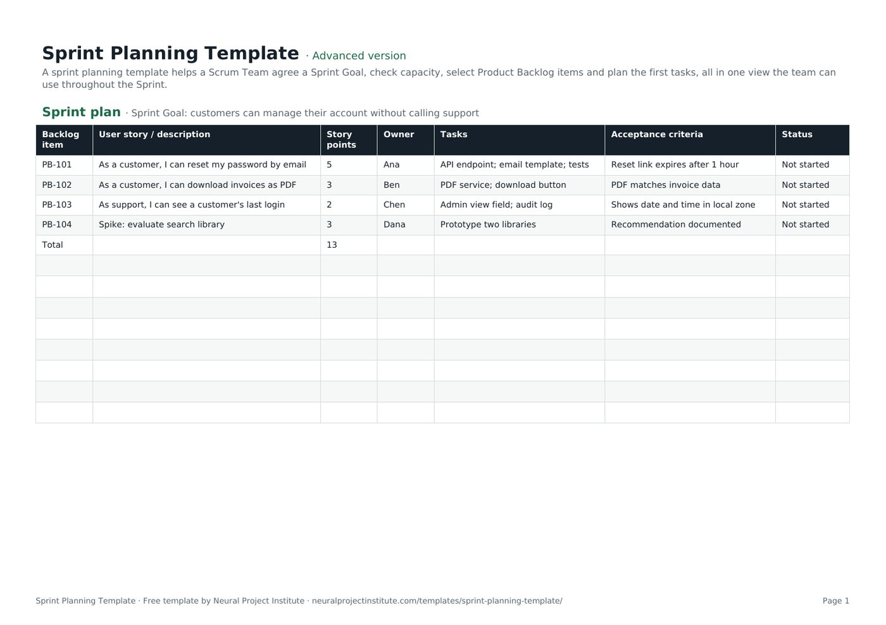

Free Sprint Planning Template (Google Sheets, Excel, PDF)
A sprint planning template helps a Scrum Team agree a Sprint Goal, check capacity, select Product Backlog items and plan the first tasks, all in one view the team can use throughout the Sprint.

Free download · no sign-up
Get the sprint planning template
Pick your level and format: Google Sheets, Excel or a print-ready PDF. Spreadsheets include dropdowns, formulas and sample rows you can overwrite.
Sprint Planning Template preview
| Backlog item | User story / description | Story points | Owner | Tasks | Acceptance criteria | Status |
|---|---|---|---|---|---|---|
| PB-101 | As a customer, I can reset my password by email | 5 | Ana | API endpoint; email template; tests | Reset link expires after 1 hour | Not started |
| PB-102 | As a customer, I can download invoices as PDF | 3 | Ben | PDF service; download button | PDF matches invoice data | Not started |
| PB-103 | As support, I can see a customer's last login | 2 | Chen | Admin view field; audit log | Shows date and time in local zone | Not started |
| PB-104 | Spike: evaluate search library | 3 | Dana | Prototype two libraries | Recommendation documented | Not started |
| Total | 13 |
Sample rows are examples: replace them with your own.
What's included
- Sprint Backlog with stories, points, owners, tasks, acceptance criteria and status
- Capacity calculator with focus factor
- Sprint plan: Backlog item, User story / description, Story points, Owner, Tasks, Acceptance criteria, Status
- Capacity: Team member, Available days, Focus factor, Capacity (days), Notes
How to use the sprint planning template
- Fill in the Capacity tab: available days per person and a realistic focus factor.
- Agree the Sprint Goal with the Product Owner.
- Select the top Product Backlog items that support the goal and fit the team's capacity and recent velocity.
- Break each item into tasks and confirm acceptance criteria.
- Use the Status column during the Sprint and review it at the Sprint Review.
Tips for getting the most from it
- Plan to about 80% of capacity to leave room for the unexpected.
- One clear Sprint Goal beats a list of unrelated items.
- Bring refined items to planning; see backlog refinement.
- Time-box planning to 8 hours for a one-month Sprint.
Learn more
Frequently asked questions
What is a sprint planning template?
A sprint planning template is a worksheet for agreeing the Sprint Goal, checking team capacity and selecting the backlog items and tasks for a Sprint.
Is this sprint planning template free?
Yes. The sprint planning template is free in Google Sheets, Excel and PDF.
What should a sprint planning template include?
The Sprint Goal, team capacity, selected Product Backlog items, estimates, owners, tasks and acceptance criteria.
How do I calculate capacity in the sprint planning template?
Multiply each person's available days by a focus factor (often 0.6 to 0.8) and add them up.
Can I use the sprint planning template with story points?
Yes. Enter story points per item; the sprint planning template totals them so you can compare with past velocity.
Who uses the sprint planning template?
The whole Scrum Team: the Product Owner brings priorities, the Developers plan the work, and the Scrum Master facilitates.
How long should sprint planning take with this sprint planning template?
Up to eight hours for a one-month Sprint, and proportionally less for shorter Sprints.
Is there an agile sprint planning template in Excel?
Yes. Download the .xlsx agile sprint planning template with capacity formulas.
What is the difference between a sprint planning template and a sprint plan?
The sprint planning template is the tool; the completed sheet is your sprint plan, or Sprint Backlog.
Can the sprint planning template replace a Scrum tool?
For small teams, yes; larger teams usually use a Scrum board in software such as Jira or Wrike.
What is the difference between the beginner, advanced and expert sprint planning template?
The beginner sprint planning template keeps only the essential columns on one tab; the advanced version is the full template with every tab, dropdown and formula; the expert version adds instructions, a dashboard that summarises your data automatically, status colours and a revision history.
Related templates
 Sprint Retrospective TemplateFree sprint retrospective template: what went well, what to improve, ideas and action…Beginner · Advanced · Expert
Sprint Retrospective TemplateFree sprint retrospective template: what went well, what to improve, ideas and action…Beginner · Advanced · Expert Kanban Board TemplateFree Kanban board template with To Do, In Progress, Review and Done columns, WIP limits…Beginner · Advanced · Expert
Kanban Board TemplateFree Kanban board template with To Do, In Progress, Review and Done columns, WIP limits…Beginner · Advanced · Expert User Story TemplateFree user story template: As a / I want / so that, acceptance criteria, epic, estimate…Beginner · Advanced · Expert
User Story TemplateFree user story template: As a / I want / so that, acceptance criteria, epic, estimate…Beginner · Advanced · Expert Product Backlog TemplateFree product backlog template with ordered items, user stories, value, estimates, Sprint…Beginner · Advanced · Expert
Product Backlog TemplateFree product backlog template with ordered items, user stories, value, estimates, Sprint…Beginner · Advanced · Expert Product Roadmap TemplateFree product roadmap template with themes, initiatives, quarters, owners and status; also…Beginner · Advanced · Expert
Product Roadmap TemplateFree product roadmap template with themes, initiatives, quarters, owners and status; also…Beginner · Advanced · Expert Agile Release Plan TemplateFree agile release plan template: releases, Sprints, features, story points, velocity…Beginner · Advanced · Expert
Agile Release Plan TemplateFree agile release plan template: releases, Sprints, features, story points, velocity…Beginner · Advanced · Expert